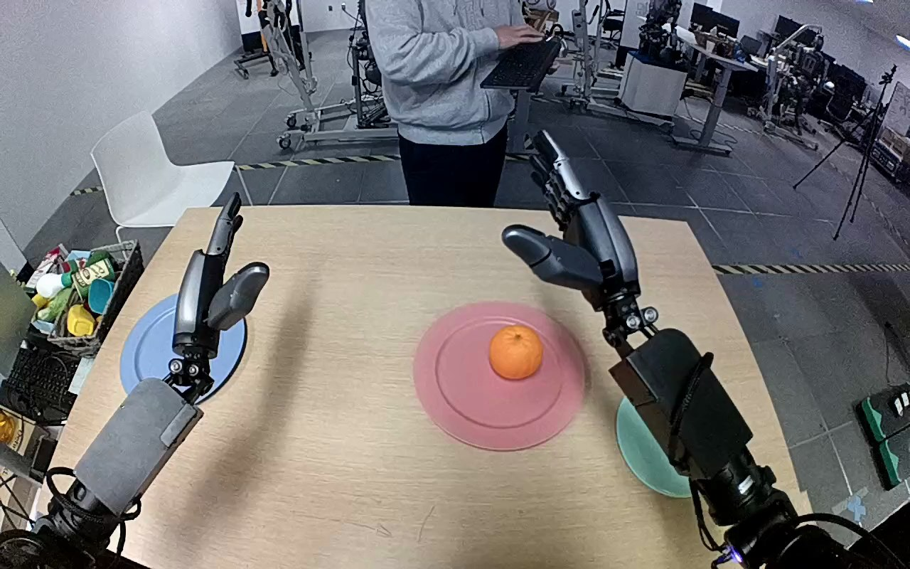

NVIDIA GR1 · 75
Video 75

Visual review action_review.json
{
"prompt_protocol": "humanoid_action_v1",
"prompt_provenance": "visually_authored_from_video_and_initial_frame",
"reviewed_contact_sheets": [
"sheet_001.jpg"
],
"inspected_frame_stride": 2,
"inspected_sampled_frame_count": 60,
"initial_scene": "Forward-looking robot view over a tabletop: one tangerine on the large central pink plate; small teal plate to the robot's right; blue plate to its left. Both robot forearms emerge from the near edge, with open hands.",
"observed_sequence": [
{
"start_frame": 0,
"end_frame": 32,
"action": "Both open hands hold above the table; the right hand begins moving inward toward the tangerine while the left stays above the blue plate.",
"confidence": "high"
},
{
"start_frame": 33,
"end_frame": 62,
"action": "Right hand approaches the tangerine on the pink plate and positions its open fingers around opposing sides of the fruit.",
"confidence": "high"
},
{
"start_frame": 63,
"end_frame": 78,
"action": "Right fingers close around the tangerine to establish a grasp; the fruit remains near the pink plate until lifting begins.",
"confidence": "high"
},
{
"start_frame": 79,
"end_frame": 96,
"action": "Right hand lifts the grasped tangerine clear of the pink plate and carries it rightward toward the small teal plate.",
"confidence": "high"
},
{
"start_frame": 97,
"end_frame": 111,
"action": "Right hand positions and lowers the held tangerine over the teal plate.",
"confidence": "high"
},
{
"start_frame": 112,
"end_frame": 119,
"action": "Right fingers open, releasing the tangerine onto the teal plate. At the final frame the fruit rests on the plate with the open hand still nearby; the pink plate is empty.",
"confidence": "high"
}
],
"arm_hand_roles": {
"right": "Sole manipulating hand: encloses the fruit, lifts and transports it from pink plate to teal plate, lowers and releases it.",
"left": "Remains open near the blue plate throughout; does not contact, support or transfer the fruit.",
"coordination": "One-handed transfer; no coordinated bimanual manipulation or human-object interaction."
},
"anatomical_side_evidence": "The initial forward-looking robot view shows paired forearms emerging from the lower near-body edges. The active forearm emerges from the robot's right side, and its thumb projects medially toward the center/left, while the opposite hand's thumb projects medially rightward. This bilateral forearm and hand orientation supports anatomical right naming, rather than relying on image position alone. Shoulder attachments and torso are outside the view.",
"terminal_state": "Tangerine released and resting on the small teal plate. Right hand is open alongside it; the central pink plate is empty and the left hand remains open near the blue plate.",
"uncertainties": [
"Shoulders and torso are outside this forward-looking view; anatomical naming relies on near-body bilateral forearm emergence and medial thumb orientation.",
"Exact finger contact surfaces and precise plate contact instant are partially occluded by the manipulating hand, but visible opening and the fruit's terminal resting state establish release."
],
"annotation_discrepancies": [],
"evidence_frame_indices": [
0,
54,
74,
90,
110,
116,
119
],
"selected_execution_status": "success",
"inspection_coverage": "Viewed the complete sheet covering all 60 even-indexed samples, frames 0 through 118, then viewed the source initial PNG and native transition frames 54, 74, 90, 110, 116 and final frame 119.",
"video_id": "75",
"dataset": "NVIDIA_GR1_100",
"dedicated_review_agent": "review_gr1_75",
"review_source_video": "NVIDIA_GR1_100/75/original/original.mp4",
"source_frame_count": 120,
"source_fps": 20.0,
"native_detail_frames": [
54,
74,
90,
110,
116,
119
],
"world_model_prompt": "The robot uses its right hand to grasp the tangerine on the large pink plate and lift it clear. It carries the fruit to the small teal plate, lowers it onto the plate, and opens its fingers to release it, leaving the tangerine resting there. Keep the camera fixed; preserve robot geometry, physically valid joint motion, and normal gripper opening and closing.",
"original_task_instruction": "Use the right hand to pick up the tangerine from from the large pink plate to to the small teal plate.",
"selected_segment": {
"start_frame": 0,
"end_frame_exclusive": 120,
"reason": "Complete original single-task reference; no cropping or trimming requested."
},
"source_video_sha256": "4b788576b1fdebe54b188c29f54109bcb10849a9a7ad62362ffdd91614bfe270",
"review_completed_at": "2026-10-13T18:30:51.906032+00:00"
}